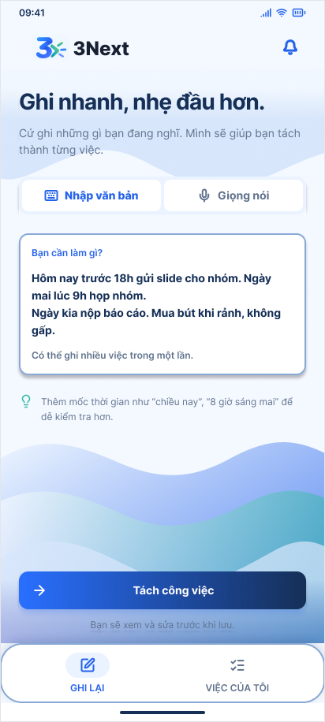

Ghi theo cách của bạn
Nhập chữ hoặc nói tự nhiên. Một câu có thể chứa nhiều việc và các mốc thời gian khác nhau.
Trợ lý sắp xếp việc cần làm cho sinh viên
3Next - AI Quick Capture & Next Action Assistant
Từ những việc vụn trong đầu đến một danh sách rõ ràng. Ghi nhanh bằng chữ hoặc giọng nói, kiểm tra lại và bắt đầu với việc quan trọng.
Đang phát triển, chưa phát hành. Bạn có thể thử prototype trên Figma.


Hành trình 3Next
3Next đang được phát triển. Cùng xem những việc nhóm đã hoàn thành và đang thực hiện.
Khảo sát 14 sinh viên và xác định hướng sản phẩm.
Thiết kế giao diện và prototype tương tác trên Figma.
Kiểm thử prototype với người dùng ngoài nhóm.
Phát triển ứng dụng Android và widget; đã có bản demo widget và API.
Đang phát triển · Chưa phát hành
Một câu quen thuộc sau buổi học
“Hôm nay gửi slide cho nhóm. Mai 9 giờ họp. Ngày kia nộp báo cáo. Nhớ mua bút khi rảnh…”
Deadline nằm trong tin nhắn, ghi chú và cả trí nhớ. 3Next giúp sinh viên gom chúng thành từng việc, rồi thu hẹp lựa chọn về ba việc nên làm tiếp.
Kết quả khảo sát · 14 sinh viên
Nhận việc từ 4 nguồn trở lên: nhóm đồ án, LMS, Zalo, giảng viên trên lớp…
Cần ít nhất vài phút để quyết định nên bắt đầu từ việc nào.
Nguồn Khảo sát Google Form của nhóm, 10/2026. Mẫu nhỏ, chỉ mang tính tham khảo.
Từ ý nghĩ đến hành động
Bạn giữ quyền quyết định từ lúc ghi việc đến khi đánh dấu hoàn thành.
Nhập chữ hoặc nói tự nhiên. Một câu có thể chứa nhiều việc và các mốc thời gian khác nhau.
Xem các việc vừa tách, kiểm tra hạn và mức ưu tiên. Chỉnh lại điều cần thiết trước khi xác nhận.

Tập trung vào Top 3 theo hạn và mức ưu tiên. Hoàn thành một việc để danh sách gợi ý cập nhật.
Thiết kế cho nhịp sống di động
Thiết kế 3Next đưa việc quan trọng ra gần bạn hơn, kể cả giữa những lần di chuyển hay đổi tiết học.
Đằng sau trải nghiệm
Giao diện dùng chữ Inter, bảng màu xanh và các thành phần nhất quán. Nhóm đang hoàn thiện prototype và chuẩn bị kiểm thử với người dùng để tiếp tục cải tiến.
Khám phá các màn hình, luồng sử dụng và design system.
Mở file Figma BEHANCECase study về vấn đề, quyết định thiết kế và design system.
Đọc trên BehanceKhám phá prototype tương tác
Bắt đầu với một câu ví dụ, thử chỉnh sửa công việc trước khi lưu, rồi xem Top 3 thay đổi khi bạn hoàn thành một việc.
Mở prototype Figma ngay tại đây để khám phá luồng sử dụng.
Đây là prototype mô phỏng giao diện. Ảnh minh họa dùng dữ liệu mẫu.